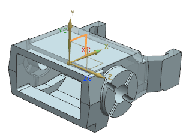

Set up the cross section edit plane
-
To display the WCS, press W.

-
Choose Insert→Synchronous Modeling→Edit Section .
-
In the Cross Section Edit dialog box, in the Sketch Plane group, from the Plane Method list, select Create Datum CSYS.
-
Click Create Datum CSYS
 .
.
-
In the Datum CSYS dialog box, in the Reference CSYS group, from the Reference list, select WCS and click OK.

-
In the Cross Section Edit dialog box, click OK.